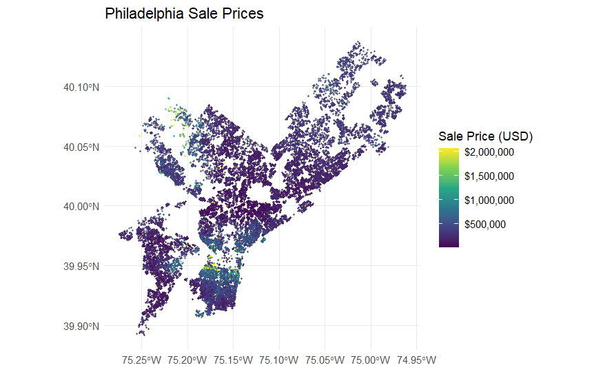
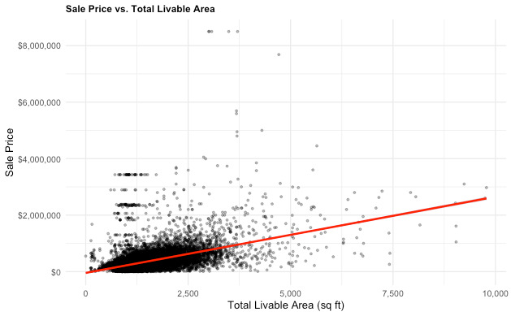

Code
1 + 1[1] 2Improving Property Tax Assessments
Team Name Consulting
Research Question
Identify which predictors (spatial, structural, and/or socio-economic) contribute to the most accurate model for the City’s Automated Valuation Model
Motivation
Residential property tax assessments have equitable and financial implications for homeowners as well as fiscal implications for the city


Limitations
Thank you